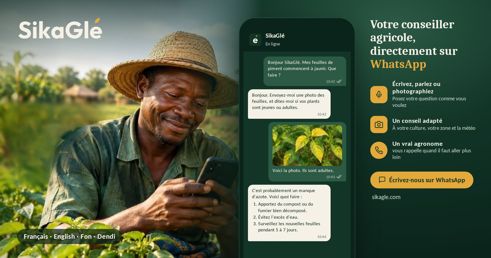

Un conseiller agricole dans la poche de chaque producteur.
Posez votre question sur WhatsApp, par écrit, en vocal ou avec une photo. SikaGlé vous répond en français, en anglais ou en fon, avec des conseils tirés de sources agricoles vérifiées.
- Ouvrez le cœur de quelques plants et écrasez les chenilles.
- Pulvérisez un extrait de feuilles de neem le soir.
Exemples de conversations : choisissez une situation.

- 6 000+documents scientifiques et fiches pratiques dans sa base de connaissances
- 40 000+images de maladies de référence pour comparer vos photos
- 9langues comprises, dont 3 dans lesquelles il répond
- 24 h/24sur WhatsApp, sans application à installer
Oui. Demandez comme vous parleriez à un voisin.
SikaGlé comprend votre façon de dire les choses, puis il vous pose les questions qui manquent pour bien comprendre votre champ.
-
Par écrit
Décrivez ce que vous voyez, avec vos mots.
-
En vocal
Parlez simplement, même dans votre langue.
-
En photo
La photo est comparée à des milliers de cas de maladies connus.
-
Avec votre position
Partagez-la si vous voulez : les conseils tiennent compte de la météo de votre champ.
SikaGlé comprend et répond en trois langues.
- Françaispar écrit et en vocal
- Anglaispar écrit et en vocal
- Fonpar écrit, et bientôt en vocalvoix en finalisation
Il comprend aussi
Posez votre question dans ces langues : SikaGlé la comprend et vous répond en français.
Yoruba, bariba, adja, goun, dendi, fulfuldé
De la recherche agricole, pas de suppositions.
Chaque réponse s'appuie sur des dizaines de sources scientifiques et de fiches pratiques, vérifiées une à une. Quand l'information manque, SikaGlé le dit au lieu de deviner.
- Instituts de recherche agricole internationaux
- Centres de recherche spécialisés par culture
- Fiches pratiques pour les producteurs
- Recherche agronomique béninoise
- Bases de diagnostic visuel des maladies
- Programmes régionaux ouest-africains
Un vrai agronome vous rappelle.
Quand une situation dépasse ce que SikaGlé peut affirmer avec certitude, il vous met en relation avec un agronome de votre région. À la demande pour tous, avec des consultations incluses pour les abonnés Premium et les membres de coopératives.
- Vous écrivez « je veux parler à un agronome ».
- SikaGlé choisit un agronome qui parle votre langue et connaît votre région.
- Il lui envoie le résumé de votre conversation : vous n'avez pas à tout réexpliquer.
- L'agronome vous rappelle directement.
Trois messages, et c'est parti.
Aucune application à installer, aucune formation.
-
Choisissez votre langue
Français, anglais ou fon : SikaGlé vous demande dans quelle langue échanger.
-
Dites ce que vous cultivez
Une phrase suffit. Les réponses s'adaptent ensuite à vos cultures.
-
Posez votre question
Par écrit, en vocal ou avec une photo. La réponse arrive dans la conversation.
Pour ceux qui travaillent la terre, et ceux qui les accompagnent.
Agriculteurs
Des réponses immédiates sur vos cultures, les maladies de vos plantes et la météo de votre zone, sur le téléphone que vous utilisez déjà.
Coopératives
Un premier niveau de conseil disponible à toute heure pour vos membres, et l'accès gratuit aux agronomes de votre coopérative.
ONG et programmes agricoles
Un outil qui complète vos équipes de terrain et touche plus de producteurs avec les mêmes moyens.
Questions fréquentes
Est-ce que SikaGlé est gratuit ?
Oui. Les questions de tous les jours sont gratuites, avec un nombre de messages par jour. Des formules payantes existent pour ceux qui veulent plus de messages, des consultations d'agronome incluses, ou pour les coopératives.
Sur quelles cultures peut-il m'aider ?
Sur les cultures courantes du Bénin et de l'Afrique de l'Ouest : maïs, manioc, niébé, riz, tomate, piment, ananas et bien d'autres. La comparaison de photos est la plus précise pour les cultures les mieux documentées, comme la tomate, le maïs, le poivron ou la pomme de terre.
Est-ce que SikaGlé remplace un agronome ?
Non. SikaGlé est un premier niveau de conseil, disponible à toute heure. Quand une situation est sérieuse ou incertaine, il vous le dit et vous met en relation avec un vrai agronome.
Faut-il beaucoup de connexion ?
Non. Il suffit que WhatsApp fonctionne sur votre téléphone. Les messages écrits consomment très peu de données ; les vocaux et les photos un peu plus.
Que deviennent mes informations ?
Elles servent à vous répondre et à adapter les conseils à vos cultures. Votre position n'est utilisée que si vous choisissez de la partager. Tout est expliqué dans notre politique de confidentialité.
Vous représentez une organisation agricole ?
Fournisseur de semences, coopérative, ONG ou institution : parlons de la façon dont SikaGlé peut s'intégrer à vos programmes ou compléter votre offre auprès des producteurs.
Ou par e-mail : contact@sikagle.com